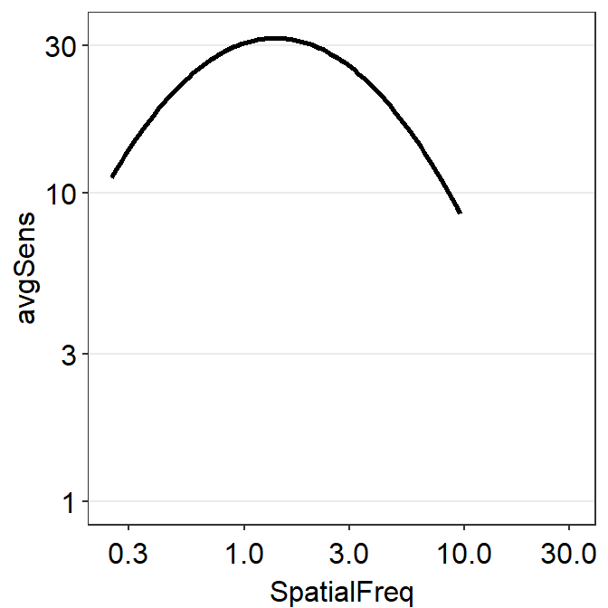

Chapter 16 Factor Analysis and CSF
library(tidyverse)
library(cowplot)
library(smplot2)
library(smCSF)
library(psych)In this chapter, we will use a public dataset of achromatic contrast sensitivity from 51 normally sighted observers.
df <- read_csv('https://www.smin95.com/data_ACh.csv') %>%
group_by(Subject, SpatialFreq) %>%
summarise(Sensitivity = mean(Sensitivity),
Repetition = 'avg')Factor analysis is a technique to identify latent factors that produce local patterns/correlations in a high-dimensional dataset. In other words, it aims to reduce the number of dimensions in the data.
In this dataset, there are 12 unique spatial frequencies. The sensitivity data were collected at these spatial frequencies to produce the contrast sensitivity function, which has a peak and has an asymmetrical shape. There are 12 dimensions total.
Can the curve be summarised using less than 12 dimensions? This is the purpose of factor analysis.
One way to extract an adequate number of factors/dimensions is to draw a scree plot.
16.1 Eigenvalues
The scree plot has a y-axis of the eigenvalue, which refers the amount of variance of the data from the factor of interest. Essentially, the higher the eigenvalue, the more important the factor is in the dataset.
Some methods for factor analysis determine the number of factors in a potential factor model based on eigenvalues. The Guttman Rule (i.e. K1) extracts all factors with eigenvalues larger than 1.
Another method that relies on eigenvalues to determine the number of factors is parallel analysis.
16.2 Parallel analysis
Parallel analysis by Horn is a statistical method to determine the number of factors in an exploratory factor model. It uses Monte Carlo simulation to generate a dataset of random numbers. This random dataset has the same size of the real dataset. Eigenvalues are obtained from the random dataset.
We will use psych package’s function fa.parallel to perform parallel analysis.
df_mat <- read_csv('https://www.smin95.com/data_ACh_mat.csv') # ACh data in matrix form
df_mat1 <- as.matrix(df_mat[,-1])After we have extracted the data that are in matrix form (not data frame), which is required to properly use functions of the psych package, we can then perform parallel analysis.
fa.parallel(df_mat1, fa ='fa') 
## Parallel analysis suggests that the number of factors = 2 and the number of components = NABased on the parallel analysis, we see that there are two factors with eigenvalues larger than those from the random data. Therefore, it supports a two-factor model.
16.3 Non-parametric bootstrapping
The Guttman rule can suggest different numbers of factors depending on the sample. For example, in one dataset, factor A can have an eigenvalue larger than 1 but in another dataset from another population factor B can have an eigenvalue lower than 1. Therefore the number of factors that is extracted can vary depending on the local sample. This creates variability in results. This issue can also be observed in parallel analysis.
Therefore, it might be better to include a range of uncertainty of eigenvalues so that one can better be informed about the possible range of eigenvalues in a population. This can be done by plotting 95% confidence interval of eigenvalues.
In this section, we will perform non-parametric bootstrapping to compute the confidence intervals of the eigenvalues. However, it turns out, if we resample the contrast sensitivity data directly, it removes the local correlation and therefore the influence of latent factors on the dataset, thereby erasing covariance from its existence.
Here is the original data set’s covariance of achromatic sensitivity.
cov(df_mat1)## 0.25ACh 0.35ACh 0.48ACh 0.68ACh 0.94ACh 1.31ACh 1.83ACh
## 0.25ACh 22.553853 23.429188 24.498759 26.144819 27.119722 25.625359 21.60603
## 0.35ACh 23.429188 28.352093 33.069624 35.968829 36.247616 32.082207 24.74990
## 0.48ACh 24.498759 33.069624 43.379601 49.569655 50.700145 44.517286 33.59999
## 0.68ACh 26.144819 35.968829 49.569655 60.799455 65.982921 61.091867 49.19744
## 0.94ACh 27.119722 36.247616 50.700145 65.982921 76.568315 75.668977 65.44809
## 1.31ACh 25.625359 32.082207 44.517286 61.091867 75.668977 80.867183 76.21127
## 1.83ACh 21.606032 24.749903 33.599993 49.197444 65.448091 76.211272 78.52685
## 2.54ACh 16.122200 16.586739 21.887087 34.913235 50.230931 63.817194 71.38985
## 3.54ACh 10.666987 9.723740 12.519950 22.282367 34.652600 47.611582 57.03988
## 4.93ACh 6.315921 5.102076 6.577193 13.174275 21.766266 31.660552 39.90512
## 6.87ACh 3.399220 2.468148 3.327873 7.293607 12.380894 18.588982 24.32394
## 9.57ACh 1.687677 1.094862 1.576529 3.604515 6.087617 9.344805 12.76669
## 2.54ACh 3.54ACh 4.93ACh 6.87ACh 9.57ACh
## 0.25ACh 16.12220 10.66699 6.315921 3.399220 1.687677
## 0.35ACh 16.58674 9.72374 5.102076 2.468148 1.094862
## 0.48ACh 21.88709 12.51995 6.577193 3.327873 1.576529
## 0.68ACh 34.91323 22.28237 13.174275 7.293607 3.604515
## 0.94ACh 50.23093 34.65260 21.766266 12.380894 6.087617
## 1.31ACh 63.81719 47.61158 31.660552 18.588982 9.344805
## 1.83ACh 71.38985 57.03988 39.905123 24.323943 12.766688
## 2.54ACh 69.65836 59.06055 43.467590 27.852288 15.605554
## 3.54ACh 59.06055 52.88406 41.115079 28.023283 16.971267
## 4.93ACh 43.46759 41.11508 34.012289 24.895661 16.353468
## 6.87ACh 27.85229 28.02328 24.895661 19.676502 13.963902
## 9.57ACh 15.60555 16.97127 16.353468 13.963902 10.614072Covariance is high. If the dataset’s covariance is high, then it is suitable for factor analysis, as demonstrated by Kaiser, Meyer and Olkin test.
KMO(df_mat1)## Kaiser-Meyer-Olkin factor adequacy
## Call: KMO(r = df_mat1)
## Overall MSA = 0.58
## MSA for each item =
## 0.25ACh 0.35ACh 0.48ACh 0.68ACh 0.94ACh 1.31ACh 1.83ACh 2.54ACh 3.54ACh 4.93ACh
## 0.64 0.62 0.66 0.68 0.65 0.77 0.61 0.54 0.50 0.49
## 6.87ACh 9.57ACh
## 0.47 0.43The test reveals that covariance is adequately high (test score > 0.5) at most spatial frequencies, suggesting that factor analysis is suitable.
Now I demonstrate what happens to covariance after resampling with replacement.
set.seed(2023)
nObs <- 51
nSF <- ncol(df_mat1) # 12 SFs total
resampled_ACh <- matrix(data=NA,nrow=nObs,ncol=nSF)
for (iSF in 1:nSF) {
resampled_ACh[,iSF] <- sample(df_mat1[,iSF],nObs, replace = T)
}Here is the re-sampled data set. We can also plot the re-sampled data against the experimental data using base R (not ggplot2) since we are using matrices to store data. Plotting in base R can be more tedious but it can be quite fun as you can control every aspect of the plot.
avgs_expt <- avgs_resampled <- vector('double',nSF)
for (iSF in 1:nSF) {
avgs_resampled[[iSF]] <- mean(resampled_ACh[,iSF])
avgs_expt[[iSF]] <- mean(df_mat1[,iSF])
}
par(mfrow=c(1,1), mar=c(4,4.1,1.2,1.2))
plot(unique(df$SpatialFreq),log(avgs_resampled), log='x',
ylim = c(0.1,max(log(c(avgs_resampled,avgs_expt)))+1),
xlab='Spatial frequency',
ylab='Contrast sensitivity', col=sm_color('blue'),
pch=15, cex=1.4)
lines(unique(df$SpatialFreq),log(avgs_resampled),
col=sm_color('blue'), cex=2)
points(unique(df$SpatialFreq)+unique(df$SpatialFreq)*0.1,
log(avgs_expt), pch=16, col=sm_color('red'), cex=1.4)
lines(unique(df$SpatialFreq)+unique(df$SpatialFreq)*0.1,
log(avgs_expt), col=sm_color('red'), cex=2)
legend(0.3,1.5,legend=c('Resampled data','Real data'),
col = sm_color('blue','red'), pch=15:16,pt.cex=1.8,
bty='n')
The two data sets look very similar but only one of them (expt data) can be used for factor analysis. Therefore, we can notice that factor analysis captures the invisible pattern of the data.
The covariance of the resampled data is shown below.
cov(resampled_ACh)## [,1] [,2] [,3] [,4] [,5] [,6]
## [1,] 21.4627680 5.494515 10.221965102 2.729971 -8.5757210 7.4823660
## [2,] 5.4945145 22.568920 4.826946260 -5.207635 -3.0187011 2.6928204
## [3,] 10.2219651 4.826946 25.536795106 4.487807 4.5788106 0.9115256
## [4,] 2.7299707 -5.207635 4.487807344 64.213237 -6.6327835 -4.6702260
## [5,] -8.5757210 -3.018701 4.578810639 -6.632783 70.0085470 -0.9150367
## [6,] 7.4823660 2.692820 0.911525567 -4.670226 -0.9150367 76.9832954
## [7,] -2.6890863 -1.019733 1.061256799 6.332680 -7.8498872 1.1816949
## [8,] -4.4720287 2.642418 -0.625930137 -1.147609 -0.6128172 15.0063584
## [9,] -2.1897953 -3.724741 2.939968833 -6.660292 -0.1807790 -8.3721325
## [10,] 1.8767583 -0.745601 -0.429574950 -5.335867 3.9479842 1.3837711
## [11,] -2.6829180 -2.175812 -0.008150298 2.882779 2.7068057 -0.1694499
## [12,] 0.7907782 3.129077 2.218694747 5.489131 3.3182865 -4.0557000
## [,7] [,8] [,9] [,10] [,11] [,12]
## [1,] -2.6890863 -4.4720287 -2.1897953 1.8767583 -2.682918028 0.7907782
## [2,] -1.0197334 2.6424185 -3.7247411 -0.7456010 -2.175812094 3.1290769
## [3,] 1.0612568 -0.6259301 2.9399688 -0.4295749 -0.008150298 2.2186947
## [4,] 6.3326798 -1.1476088 -6.6602917 -5.3358669 2.882779438 5.4891305
## [5,] -7.8498872 -0.6128172 -0.1807790 3.9479842 2.706805733 3.3182865
## [6,] 1.1816949 15.0063584 -8.3721325 1.3837711 -0.169449871 -4.0557000
## [7,] 54.0277401 -4.2848924 3.0920237 -0.4751554 -0.748155767 -2.4362892
## [8,] -4.2848924 58.1828473 5.0594523 0.9514982 1.830535708 2.3200300
## [9,] 3.0920237 5.0594523 45.7463808 7.9552430 -2.847712952 -0.8958255
## [10,] -0.4751554 0.9514982 7.9552430 31.6710052 -0.171881025 -4.3512357
## [11,] -0.7481558 1.8305357 -2.8477130 -0.1718810 9.950180547 -0.8796060
## [12,] -2.4362892 2.3200300 -0.8958255 -4.3512357 -0.879605958 9.2390137We now see that the resampled dataset has a much lower covariance in general. Since covariance is too low, it is not suitable to perform factor analysis.
KMO(resampled_ACh)## Kaiser-Meyer-Olkin factor adequacy
## Call: KMO(r = resampled_ACh)
## Overall MSA = 0.41
## MSA for each item =
## [1] 0.43 0.51 0.42 0.41 0.28 0.37 0.34 0.32 0.39 0.43 0.48 0.44The values from the KMO test are lower than 0.5 at most spatial frequencies, suggesting the data set is not suitable for factor analysis.
We can still try parallel analysis and see what happens.
fa.parallel(resampled_ACh, fa ='fa')
## Parallel analysis suggests that the number of factors = 0 and the number of components = NAThere is no identified factor because there is no covariance.
However, re-sampling is required to perform 95% confidence interval.
Therefore, a solution is to use a model that captures the contrast sensitivity function, compute parameters that retain the overall characteristic of the curve for each subject, and then re-sample the parameters with replacement. In this example, we will re-sample for 100 times (nSim <- 100).
Calculation of the parameters from a data frame that contains contrast sensitivity data can be perfomed with sm_params_list().
param_res <- sm_params_list(subjects = 'Subject',
conditions = 'Repetition',
x = 'SpatialFreq',
values = 'Sensitivity',
data = df)## [1] "CSF parameters = Sensitivity ~ SpatialFreq"After we compute the four parameters of the parabola model of CSF for each subject, we resample them with replacement. Note that the sample size with resampled data should be identical to the original sample size (nObs <- 51).
nObs <- 51
nSim <- 100 # 100 simulationsThen, we can perform non-parametric bootstrapping and obtain 95% confidence interval of the eigenvalues using sm_np_boot(). It produces a data frame with the confidence intervals from re-sampling and mean eigenvalue from the multiple rounds of re-sampling. This is stored on boot_res.
boot_res <- sm_np_boot(param_res, n=nObs, nSim = nSim)
boot_res## # A tibble: 24 x 5
## mean downCI upCI group nFac
## <dbl> <dbl> <dbl> <chr> <dbl>
## 1 8.51 7.36 9.75 data 1
## 2 2.09 1.25 3.07 data 2
## 3 0.417 0.140 0.765 data 3
## 4 -0.0858 -0.152 -0.0413 data 4
## 5 -0.116 -0.174 -0.0798 data 5
## 6 -0.150 -0.214 -0.101 data 6
## 7 -0.207 -0.296 -0.132 data 7
## 8 -0.253 -0.378 -0.156 data 8
## 9 -0.319 -0.438 -0.200 data 9
## 10 -0.380 -0.539 -0.231 data 10
## # ... with 14 more rowsBy using sm_plot_boot(), we can then draw the scree plot with the eigenvalues and their 95% confidence intervals. It draws it by using ggplot2, so you can customise the aesthetics by adding (+) ggplot2 functions as I have done here with ylab().
sm_plot_boot(boot_res, shapes = 16) +
ylab('Eigenvalue') -> eigen1
eigen1We can then extract the number of factors where the 95% confidence intervals of the eigenvalues from the observed data do not overlap with those from randomly generated data from parallel analysis. In this example, we can develop an exploratory model with two factors.
16.4 Factor Analysis
Now, we perform factor analysis with two factors. In this example, we perform varimax rotation to increase the interpretability of the results from factor analysis.
nFac <- 2
fa_res <- fa(df_mat1, nFac, fm='minres', rotate='varimax')
print(fa_res$loadings, cutoff = 0.5)##
## Loadings:
## MR1 MR2
## 0.25ACh 0.778
## 0.35ACh 0.926
## 0.48ACh 0.967
## 0.68ACh 0.957
## 0.94ACh 0.903
## 1.31ACh 0.797 0.524
## 1.83ACh 0.628 0.707
## 2.54ACh 0.844
## 3.54ACh 0.947
## 4.93ACh 0.997
## 6.87ACh 0.950
## 9.57ACh 0.810
##
## MR1 MR2
## SS loadings 5.442 5.085
## Proportion Var 0.453 0.424
## Cumulative Var 0.453 0.877It seems that two factors can describe enough of the achromatic data. The proportion of variance from these two factors are 87.7%. However, the loading scores per factor vary quite significantly, especially for the second factor (MR2). Therefore, there needs some more work to do to confirm whether a two-factor model adequately captures the covariance of the achromatic data.